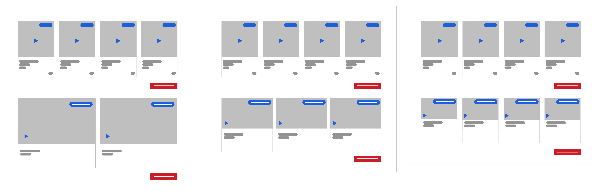

Songdew is an independent music startup that offers a platform to Indian independent musicians to release and upload their music, making it available to listeners through streaming. In addition to enabling the creation and sharing of independent music, Songdew works with multiple corporations that require original music, creating additional opportunities for musicians through the platform.
When I joined Songdew, they did not have a UX team and process in place. The artists and listener experiences were fragmented. The primary question that I had to answer was how to unify these two experiences? This was particularly challenging because Songdew had different types of content such as music, videos, opportunities, and Songdew TV.
I led the UX Design at Songdew, working in collaboration with the product, marketing, and social media team, supporting them in achieving their goal while advocating for UX in the company. As a solo designer in the team, I was also responsible for the UI design and cross-platform consistency.
From a preliminary usability testing we identified the following issues.
Before the redesign: Songdew's landing page
We used the following strategies to simplify the navigation.

Redesign of landing page included segregating Artist and Listener Features using Headings, unifying listener and artist experience before signup, and reducing the banner height to push the content up,
We used card sorting with different teams at Songdew to segregate content relevant to artists and listeners. In this process, we identified content that was more important. These included content that the music release team wanted to present to the listeners as features songs, videos, and artist.
We conceptualized a category spotlight, we differentiated it from the rest of the content on the home page using three strategies
Initial user testing showed that during a quick scroll down, the users identified Spotlight as the most important content in the homepage.

Using Card sorting to determine features presented before and after signup and conceptualizing Spotlight, a collection of recent and most important content.
In addition to restructuring the content of the website, we identified several usability issues. The song and video cards on the Songdew had similar width before the redesign. Through initial user testing, we found that at a glance, it was hard to tell that the song and video cards were two different content. The team was aware of this problem and they used UI markers to differentiate this. User testing showed that it wasn’t working.

Before the redesign: The song and video cards
We worked through several iterations of the size of song and video cards and tested them with users. In the final design, we kept the height of the song and video card the same. This meant that the number of cards displayed for songs and videos was different. Our testing showed that this made the perceived difference between the two different cards evident to the user. The title of songs and videos were not consistent, we redesigned all the cards to ensure UI consistencies.

We went through several iterations of song and video cards, the design ntention was to make a clear visual distinction between the two types of cards.
The product team at Songdew was trying to push more content by autoscrolling the cards and providing horizontal sliders. Through initial user testing, we found out that the automatic scrolling created an unpleasant experience and the users hardly paid attention to the horizontal sliders. We used these finding to advocate for removing these features and reduce the content on the homepage.

Redesigning the Video and Song Cards for UI consistency and clarity